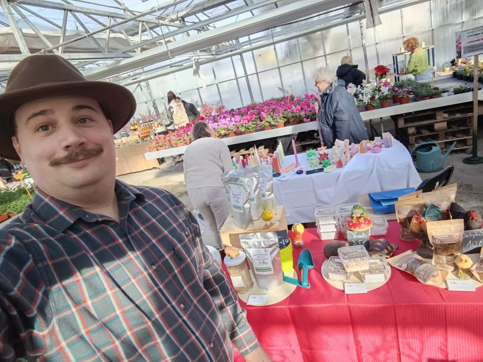

1
Invendus bio locaux
Mise en place d'un circuit de récupération de produits frais biologiques invendus ou non consommables auprès des distributeurs et agriculteurs bio locaux.
Je m'appelle Victor Burte, j'ai 33 ans. Docteur en fonctionnement des agrosystèmes, avec un cursus en biologie, écologie et agronomie, j'ai passé des années à étudier la manière dont nos systèmes agricoles fonctionnent — et la manière dont ils pourraient fonctionner mieux.
Le constat est simple : pour accompagner la transition des agriculteurs vers des pratiques éco-responsables, il faut commencer par la base — produire une alimentation animale plus saine et respectueuse de l'environnement.
Les insectes sont une réponse évidente : une source concentrée de protéines et de lipides, riche en omégas 3 et 6, idéale pour les volailles, les poissons, les animaux de compagnie et les petits habitants du jardin.
Alors j'ai créé Prod'Insectes : un élevage artisanal de vers de farine, ici à Antibes, conduit en pratiques d'agriculture biologique — sans additif, sans colorant, sans protéine animale, avec une nourriture 100 % végétale.

Avoine, fruits et légumes non transformés. Aucune protéine animale, aucun additif, aucun colorant — jamais.
Un circuit de récupération des fruits et légumes bio invendus, auprès de distributeurs locaux, nourrit l'élevage au quotidien.
Le ver de farine concentre protéines, lipides et omégas 3 et 6 : un complément idéal pour volailles, poissons et animaux de compagnie.
Le guano de l'élevage devient un engrais organique concentré, qui permet de réduire l'usage d'engrais chimiques dans les cultures.
C'est la colonne vertébrale de Prod'Insectes : chaque étape nourrit la suivante, et la boucle se referme dans les cultures locales.
Mise en place d'un circuit de récupération de produits frais biologiques invendus ou non consommables auprès des distributeurs et agriculteurs bio locaux.
Les vers sont nourris avec des denrées biologiques non transformées (céréales, fruits, légumes et champignons).
Une partie de la production est utilisée à l'entretien et la croissance de l'élevage. L'autre partie est conditionnée et commercialisée (vers de farine vivants ou déshydratés, poudre d'insectes).
Le guano est composé des déjections des insectes : c'est un produit riche en matière organique qui, une fois mélangé aux résidus alimentaires des insectes, forme le frass.
Le frass est filtré et tamisé pour récupérer une poudre sèche très fine, riche en azote, phosphore, potassium et autres composés issus des insectes. Cette poudre forme un engrais organique unique en son genre, aux propriétés fortifiantes et durables pour les plantes. Les éléments qui le composent sont utilisables directement par les plantes.
Les insectes font partie du régime alimentaire de nombreux animaux (mammifères, poissons, oiseaux, reptiles, amphibiens). Leur haute qualité améliore significativement la qualité nutritionnelle et sanitaire des animaux qui les consomment.
L'engrais organique produit par les insectes est une alternative très intéressante aux engrais chimiques. Il est également utilisable en agriculture biologique.
Il est donc possible de produire des denrées de qualité biologique en utilisant les insectes de notre production pour l'alimentation animale et l'engrais organique pour les cultures arboricoles et maraîchères locales. La boucle est bouclée !